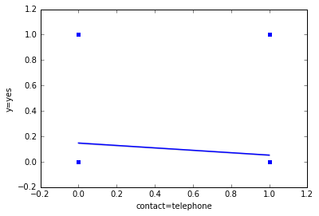

...: from sklearn.feature_extraction import DictVectorizer
...: import seaborn as sns
...: %matplotlib inline
...: from pandas.plotting import scatter_matrix
In [2]: data = pd.read_csv("bank-additional-full.csv", sep=';')
In [3]: data.head()
...:
Out[3]:
age job marital ... euribor3m nr.employed y
0 56 housemaid married ... 4.857 5191.0 no
1 57 services married ... 4.857 5191.0 no
2 37 services married ... 4.857 5191.0 no
3 40 admin. married ... 4.857 5191.0 no
4 56 services married ... 4.857 5191.0 no
[5 rows x 21 columns]
In [4]: data_dict = data.T.to_dict().values() #converting dataframes to dict
In [5]: vec = DictVectorizer()
...: signal_array = vec.fit_transform(data_dict).toarray()
...: feature_names = vec.get_feature_names()
In [6]: df = pd.DataFrame(signal_array,columns=feature_names)
In [7]: df.head()
Out[7]:
age campaign cons.conf.idx ... previous y=no y=yes
0 56.0 1.0 -36.4 ... 0.0 1.0 0.0
1 57.0 1.0 -36.4 ... 0.0 1.0 0.0
2 37.0 1.0 -36.4 ... 0.0 1.0 0.0
3 40.0 1.0 -36.4 ... 0.0 1.0 0.0
4 56.0 1.0 -36.4 ... 0.0 1.0 0.0
[5 rows x 65 columns]
In [8]: import numpy as np
...: import matplotlib.pyplot as plt
In [9]: from sklearn.datasets import make_classification
...: from sklearn.ensemble import RandomForestClassifier
In [10]: X = signal_array[:,:-2]
...: X = np.hstack((X[:,:14],X[:,15:]))
...: y = signal_array[:,-1]
...: # Build a forest and compute the feature importances
...: forest = RandomForestClassifier(n_estimators=250,
...: random_state=0)
...:
...: forest.fit(X, y)
...: importances = forest.feature_importances_
...: std = np.std([tree.feature_importances_ for tree in forest.estimators_],
...: axis=0)
...: indices = np.argsort(importances)[::-1]
...:
In [11]: print("Feature ranking:")
...:
...: for f in range(X.shape[1]):
...: print("%d. feature %s (%f)" % (f + 1, feature_names[indices[f]], importances[indices[f]]))
...:
...:
...: # Plot the feature importances of the forest
...: plt.figure()
...: plt.title("Feature importances")
...: plt.bar(range(X.shape[1]), importances[indices],
...: color="g", yerr=std[indices], align="center")
...: plt.xticks(range(X.shape[1]), indices)
...: plt.xlim([-1, X.shape[1]])
...: plt.show()
Feature ranking:
1. feature age (0.164047)
2. feature emp.var.rate (0.117021)
3. feature campaign (0.083560)
4. feature month=sep (0.049478)
5. feature nr.employed (0.034052)
6. feature cons.conf.idx (0.027570)
7. feature cons.price.idx (0.023012)
8. feature poutcome=nonexistent (0.022943)
9. feature education=unknown (0.022474)
10. feature euribor3m (0.021194)
11. feature housing=unknown (0.021185)
12. feature housing=yes (0.017653)
13. feature marital=divorced (0.016720)
14. feature education=basic.9y (0.016283)
15. feature education=professional.course (0.016191)
16. feature marital=married (0.014782)
17. feature day_of_week=mon (0.014618)
18. feature day_of_week=wed (0.014473)
19. feature poutcome=success (0.014427)
20. feature day_of_week=thu (0.014243)
21. feature day_of_week=tue (0.014166)
22. feature job=student (0.014008)
23. feature job=unknown (0.014003)
24. feature loan=unknown (0.013831)
25. feature day_of_week=fri (0.013753)
26. feature education=illiterate (0.011851)
27. feature job=admin. (0.011798)
28. feature education=basic.6y (0.011275)
29. feature loan=yes (0.010415)
30. feature job=housemaid (0.009447)
31. feature job=self-employed (0.009024)
32. feature contact=telephone (0.008300)
33. feature duration (0.008157)
34. feature contact=cellular (0.007694)
35. feature pdays (0.007676)
36. feature poutcome=failure (0.007590)
37. feature default=unknown (0.007252)
38. feature default=no (0.007184)
39. feature job=management (0.007027)
40. feature education=basic.4y (0.006778)
41. feature education=university.degree (0.006760)
42. feature job=retired (0.006212)
43. feature job=blue-collar (0.005778)
44. feature month=nov (0.005462)
45. feature job=services (0.005384)
46. feature job=technician (0.004991)
47. feature month=mar (0.004532)
48. feature job=entrepreneur (0.004431)
49. feature month=jun (0.004220)
50. feature marital=unknown (0.003309)
51. feature month=jul (0.003013)
52. feature month=dec (0.002521)
53. feature month=apr (0.002500)
54. feature loan=no (0.002475)
55. feature housing=no (0.002460)
56. feature month=oct (0.002417)
57. feature job=unemployed (0.002256)
58. feature month=may (0.002140)
59. feature month=aug (0.000844)
60. feature marital=single (0.000843)
61. feature education=high.school (0.000297)
62. feature default=yes (0.000001)
In [12]: ax = sns.regplot(x="age", y="y=yes", order=3, data=df, truncate=True)
...:
In [13]: ax = sns.regplot(x="campaign", y="y=yes", order=1, data=df, truncate=True)
In [14]: df.loc[(df['campaign'] >15) & (df['y=yes']==1)]
Out[14]:
age campaign cons.conf.idx ... previous y=no y=yes
3219 39.0 23.0 -36.4 ... 0.0 0.0 1.0
10162 44.0 17.0 -41.8 ... 0.0 0.0 1.0
17284 59.0 17.0 -42.7 ... 0.0 0.0 1.0
17655 50.0 17.0 -42.7 ... 0.0 0.0 1.0
29980 31.0 17.0 -47.1 ... 0.0 0.0 1.0
[5 rows x 65 columns]
In [15]: ax = sns.regplot(x="emp.var.rate", y="y=yes", order=1, data=df, truncate=True)
In [16]: ax = sns.regplot(x="nr.employed", y="y=yes", order=1, data=df, truncate=True)
...:
In [17]: ax = sns.regplot(x="age", y="y=yes", order=1, data=df, truncate=True)
...:
In [18]: ax = sns.regplot(x="duration", y="y=yes", order=1, data=df, truncate=True)
...:
In [19]: ax = sns.regplot(x="contact=telephone", y="y=yes", order=1, data=df, truncate=True)
...:

In [20]: ax = sns.regplot(x="month=sep", y="y=yes", order=1, data=df, truncate=True)
...:
In [21]: ax = sns.regplot(x="cons.conf.idx", y="y=yes", order=1, data=df, truncate=True)
...:
In [22]: ax = sns.regplot(x="poutcome=nonexistent", y="y=yes", order=1, data=df, truncate=True)
...:
In [23]: ax = sns.regplot(x="education=unknown", y="y=yes", order=1, data=df, truncate=True)
...:
In [24]: ax = sns.regplot(x="euribor3m", y="y=yes", order=1, data=df, truncate=True)
...:
In [25]: ax = sns.regplot(x="housing=unknown", y="y=yes", order=1, data=df, truncate=True)
...:
In [26]: ax = sns.regplot(x="housing=yes", y="y=yes", order=1, data=df, truncate=True)
...:
In [27]: sum(df['y=yes'])/sum(df['campaign'])
Out[27]: 0.043875408967982296
In [28]: print "Nth Call \t Efficiency"
...: for i in range(1,30):
...: goo = sum(df.loc[df['campaign']==i]['y=yes']) / float(df.loc[df['campaign'] >= i].shape[0])
...: print (str((i))+" \t\t "+str(goo))
...:
...:
File "<ipython-input-28-088a35942f03>", line 1
print "Nth Call \t Efficiency"
^
SyntaxError: Missing parentheses in call to 'print'
In [29]: print ("Nth Call \t Efficiency")
...: for i in range(1,30):
...: goo = sum(df.loc[df['campaign']==i]['y=yes']) / float(df.loc[df['campaign'] >= i].shape[0])
...: print (str((i))+" \t\t "+str(goo))
...:
...:
Nth Call Efficiency
1 0.05584150723511702
2 0.05143124097511254
3 0.04423551171393342
4 0.03261296660117878
5 0.024077046548956663
6 0.022156573116691284
7 0.015793848711554447
8 0.009566685424873381
9 0.012345679012345678
10 0.010968921389396709
11 0.01380897583429229
12 0.004335260115606936
13 0.007054673721340388
14 0.002105263157894737
15 0.0049261083743842365
16 0.0
17 0.013157894736842105
18 0.0
19 0.0
20 0.0
21 0.0
22 0.0
23 0.008620689655172414
24 0.0
25 0.0
26 0.0
27 0.0
28 0.0
29 0.0
In [30]: print("For age upto 30")
...: print ("Nth Call \t Efficiency")
...: for i in range(1,30):
...: num = float(df[(df['age'] <= 30) & (df['campaign']==i) & (df['y=yes']==1)].shape[0])
...: den = 1+float(df[(df['age'] <= 30) & (df['campaign'] >= i)].shape[0])
...: print (str((i))+" \t\t "+str(num/den))
...:
...:
For age upto 30
Nth Call Efficiency
1 0.07502708559046588
2 0.07100309745055992
3 0.06274509803921569
4 0.04447739065974796
5 0.03882352941176471
6 0.02058319039451115
7 0.030805687203791468
8 0.006493506493506494
9 0.012875536480686695
10 0.005376344086021506
11 0.013888888888888888
12 0.0
13 0.010869565217391304
14 0.0
15 0.014705882352941176
16 0.0
17 0.0
18 0.0
19 0.0
20 0.0
21 0.0
22 0.0
23 0.0
24 0.0
25 0.0
26 0.0
27 0.0
28 0.0
29 0.0
In [31]: print("For age between 30-40")
...: print ("Nth Call \t Efficiency")
...: for i in range(1,30):
...: num = float(df[(df['age'] <= 40) & (df['age'] > 30) & (df['campaign']==i) & (df['y=yes']==1)].shape[0])
...: den = 1+float(df[(df['age'] <= 40) & (df['age'] > 30) & (df['campaign'] >= i)].shape[0])
...: print (str((i))+" \t\t "+str(num/den))
...:
...:
For age between 30-40
Nth Call Efficiency
1 0.04882216526302942
2 0.042643923240938165
3 0.04005444293214078
4 0.028093645484949834
5 0.02048131080389145
6 0.024279210925644917
7 0.007494646680942184
8 0.008746355685131196
9 0.011538461538461539
10 0.011990407673860911
11 0.015015015015015015
12 0.0076045627376425855
13 0.009523809523809525
14 0.0
15 0.0
16 0.0
17 0.009259259259259259
18 0.0
19 0.0
20 0.0
21 0.0
22 0.0
23 0.02040816326530612
24 0.0
25 0.0
26 0.0
27 0.0
28 0.0
29 0.0
In [32]: print("For age between 40-50")
...: print ("Nth Call \t Efficiency")
...: for i in range(1,30):
...: num = float(df[(df['age'] <= 50) & (df['age'] > 40) & (df['campaign']==i) & (df['y=yes']==1)].shape[0])
...: den = 1+float(df[(df['age'] <= 50) & (df['age'] > 40) & (df['campaign'] >= i)].shape[0])
...: print (str((i))+" \t\t "+str(num/den))
...:
...:
For age between 40-50
Nth Call Efficiency
1 0.03925397910360316
2 0.036345108695652176
3 0.03047676523838262
4 0.027820710973724884
5 0.020737327188940093
6 0.016853932584269662
7 0.008012820512820512
8 0.008368200836820083
9 0.005333333333333333
10 0.013888888888888888
11 0.017316017316017316
12 0.005434782608695652
13 0.006622516556291391
14 0.007936507936507936
15 0.0
16 0.0
17 0.023529411764705882
18 0.0
19 0.0
20 0.0
21 0.0
22 0.0
23 0.0
24 0.0
25 0.0
26 0.0
27 0.0
28 0.0
29 0.0
In [33]: print("For age between 50-60")
...: print ("Nth Call \t Efficiency")
...: for i in range(1,30):
...: num = float(df[(df['age'] <= 60) & (df['age'] > 50) & (df['campaign']==i) & (df['y=yes']==1)].shape[0])
...: den = 1+float(df[(df['age'] <= 60) & (df['age'] > 50) & (df['campaign'] >= i)].shape[0])
...: print (str((i))+" \t\t "+str(num/den))
...:
...:
For age between 50-60
Nth Call Efficiency
1 0.050709615691277306
2 0.05120481927710843
3 0.040806293018682396
4 0.024681528662420384
5 0.016766467065868262
6 0.02120141342756184
7 0.022004889975550123
8 0.013559322033898305
9 0.024489795918367346
10 0.009900990099009901
11 0.0
12 0.0
13 0.0
14 0.0
15 0.011363636363636364
16 0.0
17 0.016129032258064516
18 0.0
19 0.0
20 0.0
21 0.0
22 0.0
23 0.0
24 0.0
25 0.0
26 0.0
27 0.0
28 0.0
29 0.0
In [34]: print("For age above 60")
...: print ("Nth Call \t Efficiency")
...: for i in range(1,30):
...: num = float(df[(df['age'] > 60) & (df['campaign']==i) & (df['y=yes']==1)].shape[0])
...: den = float(df[(df['age'] > 60) & (df['campaign'] >= i)].shape[0])+1
...: print (str((i))+" \t\t "+str(num/den))
...:
...:
For age above 60
Nth Call Efficiency
1 0.24807903402854006
2 0.25806451612903225
3 0.20512820512820512
4 0.19230769230769232
5 0.12244897959183673
6 0.12121212121212122
7 0.18181818181818182
8 0.06666666666666667
9 0.0
10 0.0
11 0.16666666666666666
12 0.0
13 0.0
14 0.0
15 0.0
16 0.0
17 0.0
18 0.0
19 0.0
20 0.0
21 0.0
22 0.0
23 0.0
24 0.0
25 0.0
26 0.0
27 0.0
28 0.0
29 0.0
In [35]: total_calls = sum(df['campaign'])
...: print(total_calls)
...:
105754.0
In [36]: extra_calls = sum(df[df['campaign']>6]['campaign']) - 6*df[df['campaign']>6].shape[0]
...: print(extra_calls)
...:
12040.0
In [37]: reduction=100*extra_calls/total_calls
...: print(reduction)
11.384912154622993
In [38]: total_sales=float(df[df['y=yes']==1].shape[0])
...: print(total_sales)
...:
4640.0
In [39]: less_costly_sales=float(df[(df['campaign'] <= 6) & (df['y=yes']==1)].shape[0])
...: print(less_costly_sales)
4529.0
In [40]: sales_percent=100*less_costly_sales/total_sales
...: print(sales_percent)
...:
...:
97.60775862068965
In [41]: